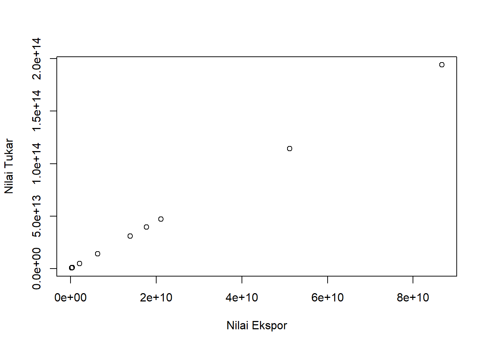
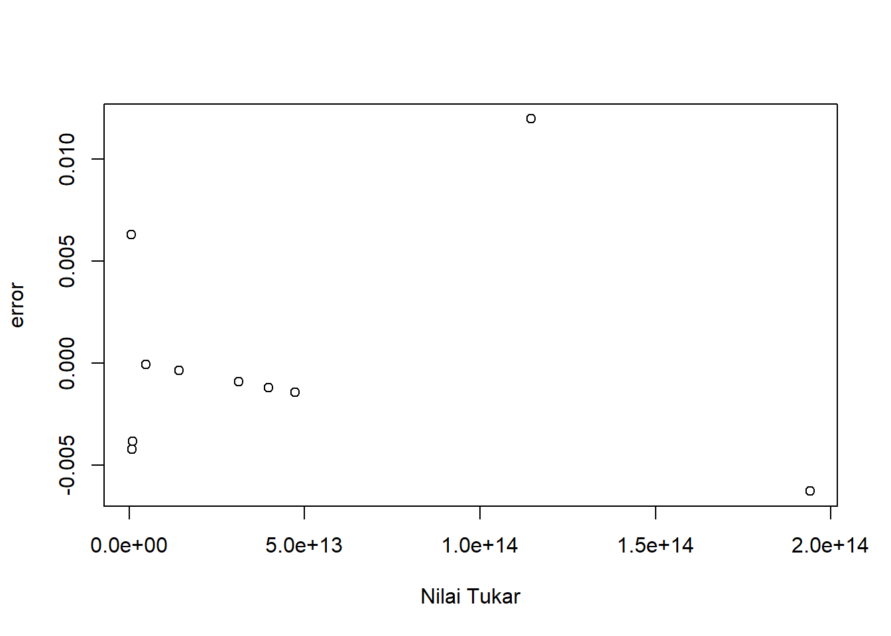

library(tidyverse)
library(readxl)
library(WDI) Analisis Pengaruh Ekspor Besi Baja ke Negara Tiongkok Terhadap Nilai Tukar Rupiah Tahun 2012-2021
Metode Penelitian Politeknik APP Jakarta

1 Pendahuluan
1.1 Latar belakang
Perdagangan internasional merupakan aktivitas ekonomi yang melibatkan antara satu negara dengan negara lain. Kegiatan ini biasanya disebut ekspor impor. Suatu negara tentunya membutuhkan negara lain untuk memenuhi kebutuhan dari negaranya serta untuk memajukan negaranya. Kebijakan ekspor adalah jumlah konsumsi dalam negeri yang memenuhi kebutuhan dan jumlah produksi dalam negeri yang tercukupi. Konsumsi yaitu belanja barang-barang dan jasa-jasa yang dilakukan oleh rumah tangga dengan maksud memenuhi kebutuhannya (Sukirno, 2000). Proses pengolahan input menjadi output sehingga nilai barang tersebut bertambah merupakan pengertian dari produksi (Adiningsih, 1993). Dalam memenuhi kebutuhan yang krusial terhadap suatu komoditas yaitu salah satunya besi dan baja. Sebagai salah satu negara penghasil bijih nikel terbesar di dunia, Indonesia berkembang pesat dalam industri besi dan baja. Saat ini Indonesia menjadi negara penghasil besi dan baja stainless terbesar nomor dua di dunia. Peningkatan Produksi besi dan baja ini membuat Indonesia menjadi negara terbesar yang mengekspor besi dan baja ke Tiongkok.
Menurut laporan Badan Pusat Statistik (BPS), nilai ekspor besi dan baja nasional pada Januari-Desember 2021 mencapai US$ 21,47 miliar atau sekitar Rp 307,04 triliun. Nilai itu melonjak hingga 90,26% dibandingkan tahun sebelumnya, yaitu US$ 11,28 miliar atau sekitar Rp 161,13 triliun. Sedangkan, ekspor besi dan baja Indonesia mencapai 14,08 miliar kg. Volume ekspor tersebut naik 52,46% dibandingkan ekspor tahun sebelumnya sejumlah 9,24 miliar kg. Negara yang menjadi tujuan utama ekspor besi/baja Indonesia pada 2021 adalah Tiongkok yaitu dengan volume: 7.507.896.958 kg dan Nilai: US$ 12.818.414.216, Taiwan dengan volume: 1.735.849.217 kg dan Nilai: US$ 2.685.099.907 dan Malaysia dengan volume: 611.078.450 kg dan Nilai: US$ 745.508.509 (sumber : https://databoks.katadata.co.id)
Industri baja merupakan penggerak dari industri yang lain. Kemajuannya, tentunya dapat menjadi penguatan struktur industri lain di suatu negara. Melihat fenomena ini maka seharusnya pemerintah dapat memanfaatkannya dengan baik agar terus meningkatkan ekspor besi baja. Pemerintah juga harus memonitor hal ini. agar dengan meningkatnya ekspor ini tidak juga memberikan pasar impor yang tinggi untuk di dalam negeri. Nilai tukar suatu negara akan berpengaruh terhadap pertumbuhan ekspor. Nilai tukar yang semakin menguat akan berakibat pada jumlah ekspor suatu negara mengalami penurunan. Hal ini terjadi karena barang-barang di dalam negeri lebih mahal daripada barang luar negeri. begitupun sebaliknya. Dari latar belakang dan permasalahan diatas, maka penulis ingin meneliti tentang Pengaruh Ekspor Besi Baja ke Negara Tiongkok Terhadap Nilai Tukar Rupiah Tahun 2012-2021.
1.2 Ruang lingkup
Obyek dari penelitian ini adalah ekspor besi/baja Indonesia ke Tiongkok, karena Tiongkok adalah importir besi baja terbesar dari Indonesia. Ruang lingkup penelitian ini adalah untuk mengenai pengaruh ekspor besi baja ke Tiongkok terhadap nilai tukar rupiah tahun 2012-2021 serta variabel - variabel yang berkaitan dengan judul penelitian yaitu ekspor dan nilai tukar rupiah. Data yang diambil dari badan pusat statistik selama sembilan tahun terakhir (2012-2021). Data ini kemudian dibandingkan dengan nilai tukar rupiah.
1.3 Rumusan masalah
Dari pendahuluan yang sudah dikemukakan oleh penulis maka dapat didapatkan rumusan masalah sebagai berikut :
- Menganalisis pengaruh ekspor besi dan baja ke negara Tiongkok terhadap nilai tukar rupiah tahun 2012-2021
1.4 Tujuan dan manfaat penelitian
Berdasarkan masalah-masalah yang telah peneliti rumuskan, maka tujuan penelitian ini adalah untuk mendapatkan pengetahuan yang tepat (sahih, benar, valid) dan dapat dipercaya (dapat diandalkan, reliable) tentang pengaruh ekspor besi baja ke tiongkok terhadap nilai tukar rupiah. Manfaat yang diharapkan dari hasil penelitian ini adalah untuk mengetahui seberapa besar pengaruh ekspor besi/baja ke Tiongkok terhadap nilai tukar rupiah sebagai gambaran dan acuan dalam menetapkan kebijakan atau keputusan terhadap ekspor besi/baja ke Tiongkok.
1.5 Package
Ini tidak wajib ada di packages yang digunakan antara lain sebagai berikut:
2 Studi pustaka
Perdagangan Internasional
Dua alasan utama negara-negara melakukan perdagangan internasional karena adanya perbedaan antar masing-masing negara serta agar produksi dapat mencapai skala ekonomis (economies of scale) (Krugman dan Obsfelt, 2003) perdagangan internasional memiliki subyek dalam ekonomi yaitu warga negara biasa, perusahaan ekspor, perusahaan impor, perusahaan industri, perusahaan negara, ataupun departemen pemerintah yang dapat dilihat dari neraca perdagangan (Sobri, 2000)
Ekspor
Ekspor merupakan penjualan dan pengeluaran barang dari dalam negeri ke luar negeri untuk suatu perekonomian. ekspor juga bisa dikatakan perdagangan dengan cara mengeluarkan barang dari dalam wilayah pabeanan indonesia ke luar negeri dengan memenuhi ketentuan yang berlaku. ekspor suatu negara dapar ditentukan oleh beberapa faktor seperti selera konsumen terhadap barang tersebut, harga barang tersebut dan kurs yang menentukan jumlah mata uang domestik
Nilai Tukar
Perdagangan antar negara dimana masing – masing negara mempunyai alat tukarnya sendiri mengharuskan adanya angka perbandingan nilai suatu mata uang dengan mata uang lainnya, yang disebut kurs valuta asing atau kurs (Salvatore, 1998)
3 Metode penelitian
3.1 Data
| Tahun | Nilai Ekspor (CNY) | Nilai Tukar (IDR) |
|---|---|---|
| 2012 | 364435820 | 815855480000 |
| 2013 | 248602130 | 556540820000 |
| 2014 | 446400010 | 999347140000 |
| 2015 | 2143261960 | 4798079440000 |
| 2016 | 6329532160 | 14169802240000 |
| 2017 | 13898010630 | 31113209820000 |
| 2018 | 17738134540 | 39710021560000 |
| 2019 | 21105440230 | 47248344220000 |
| 2020 | 51138203270 | 114482114780000 |
| 2021 | 86707952170 | 194111429380000 |
sumber data badan pusat statistik (FOB : USD 000)
Penelitian ini menggunakan data sekunder dalam bentuk time series dengan rentang waktu 2012-2021 berdasarkan nilai ekspor besi/baja Indonesia ke Tiongkok serta nilai tukar rupiah terhadap mata uang yuan Tiongkok.
library(readxl)
dat<-read_excel("latihan.xlsx")
reg1<-lm(Y~X,data=dat)
plot(dat$X,dat$Y,xlab="Nilai Ekspor",ylab="Nilai Tukar")
library(readxl)
dat<-read_excel("latihan.xlsx")
reg1<-lm(Y~X,data=dat)
dat$u<-resid(reg1)
plot(dat$Y,dat$u,xlab="Nilai Tukar",ylab="error")
3.2 Metode analisis
Teknik analisis yang digunakan yaitu deskriptif kuantitatif adalah suatu teknik yang bertujuan untuk membuat gambar atau deskriptif tentang suatu keadaan secara objektif yang menggunakan angka, mulai dari pengumpulan data, penafsiran terhadap data tersebut serta penampilan dan hasilnya (Arikunto, 2006). Metode yang dipilih adalah regresi univariat atau Ordinary Least Square (OLS) dengan 1 variabel independen. Penelitian ini bermaksud mencari hubungan antara nilai tukar dan nilai ekspor. Spesifikasi yang dilakukan adalah:
\[ y_{t}=\beta_0 + \beta_1 x_t+\mu_t \] Di mana \(y_t\) adalah nilai tukar Yuan terhadap mata uang Rupiah. β0 adalah koefisien konstanta; β1 adalah parameter; \(x_t\) adalah nilai ekspor dan μi adalah error term.
4 Pembahasan
4.1 Pembahasan masalah
| Tahun | Nilai Ekspor | Pertumbuhan |
|---|---|---|
| 2012 | 364435820 | 0 |
| 2013 | 248602130 | -0.32 |
| 2014 | 446400010 | 0.80 |
| 2015 | 2143261960 | 3.80 |
| 2016 | 6329532160 | 1.95 |
| 2017 | 13898010630 | 1.20 |
| 2018 | 17738134540 | 0.28 |
| 2019 | 21105440230 | 0.19 |
| 2020 | 51138203270 | 1.42 |
| 2021 | 86707952170 | 0.70 |
Berdasarkan tabel di atas, pertumbuhan Nilai ekspor tahun 2012-2021 tumbuh secara fluktuatif. Pada tahun 2013 Nilai Ekspor besi baja Indonesia ke Tiongkok sempat mengalami minus sebesar -0.32% atau sebesar 248602130 hal tersebut mengalami penurunan dari tahun sebelumnya yaitu sebesar 364435820. Sedangkan pertumbuhan tertinggi nilai ekspor besi/baja Indonesia ke Tiongkok pada tahun 2015 yaitu sebesar 3.80% .
4.2 Analisis masalah
Hasil Pengaruh Ekspor Besi Baja ke Negara Tiongkok Terhadap Nilai Tukar Rupiah diestimasi menggunakan regresi univariat atau Ordinary Least Square (OLS). hasilnya ditunjukkan sebagai berikut :
library(readxl)
dat<-read_excel("latihan.xlsx")
reg1<-lm(Y~X,data=dat)
summary(reg1)Warning in summary.lm(reg1): essentially perfect fit: summary may be unreliable
Call:
lm(formula = Y ~ X, data = dat)
Residuals:
Min 1Q Median 3Q Max
-0.0062720 -0.0032321 -0.0010537 -0.0001242 0.0119713
Coefficients:
Estimate Std. Error t value Pr(>|t|)
(Intercept) -9.882e-03 2.250e-03 -4.391e+00 0.00231 **
X 2.239e+03 6.745e-14 3.319e+16 < 2e-16 ***
---
Signif. codes: 0 '***' 0.001 '**' 0.01 '*' 0.05 '.' 0.1 ' ' 1
Residual standard error: 0.005694 on 8 degrees of freedom
Multiple R-squared: 1, Adjusted R-squared: 1
F-statistic: 1.102e+33 on 1 and 8 DF, p-value: < 2.2e-16Dapat dilihat dari tabel di atas bahwa hasil regresi jumlah ekspor besi/baja berpengaruh positif terhadap nilai tukar rupiah. Jumlah ekspor besi/baja meningkat sebesar 1 persen maka akan meningkatkan nilai tukar rupiah sebesar 4.467e-04. Apabila ekspor menurun sebesar 1 persen maka akan menurunkan nilai tukar rupiah sebesar 4.467e-04. hal ini menunjukkan bahwa ekspor besi baja berpengaruh terhadap nilai tukar rupiah. Ditunjukkann dengan di lihat dari probabilitas X (Nilai Ekspor) yang signifikan. nilai ekspor merupakan suatu faktor yang dapat dijadikan naik dan turunnya kurs mata uang suatu negara. Dengan hasil ini maka dapat disimpulkan bahwa pendapatan ekspor besi baja berpengaruh positif terhadap nilai tukar rupiah.
5 Kesimpulan
Berdasarkan data hasil analisis yang telah kami lakukan, setelah diamati ekspor besi/baja ke negara Tiongkok berpengaruh positif terhadap nilai tukar rupiah dan besi/baja merupakan salah satu komoditas utama yang memiliki volume ekspor tersebesar di Indonesia. Oleh sebab itu apabila ekspor besi/baja ke negara Tiongkok berpengaruh positif terhadap nilai tukar rupiah maka mempengaruhi nilai kurs rupiah terhadap yuan.
6 Referensi
Pradana, A. R. (2016). Faktor–Faktor yang Mempengaruhi Permintaan Impor Besi dan Baja di Indonesia dari Tiongkok Tahun 2000-2014. https://dspace.uii.ac.id/handle/123456789/32744
Nilai Ekspor Besi dan Baja Nasional Melesat 90,26% pada 2021, Tiongkok Jadi Tujuan Terbesar |Databoks. (n.d.). Retrieved January 20, 2023, from https://databoks.katadata.co.id/datapublish/2022/03/14/nilai-ekspor-besi-dan-baja-nasional-melesat-9026-pada-2021-tiongkok-jadi-tujuan-terbesar
Badan Pusat Statistik. (n.d.). Retrieved January 20, 2023, from https://www.bps.go.id/statictable/2019/02/27/2033/ekspor-besi-baja-menurut-negara-tujuan-utama-2012-2021.html